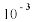
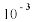

Numericka matematika
sept. '98.
asistent:
1. Neka je funkcija zadana sledecom tablicom:
|
0.0 |
0.5 |
1.0 |
1.5 |
2.0 |
2.5 |
3.0 |
| - 0.30906 | - 0.56145 | - 0.65123 | - 0.58450 | - 0.39368 | - 0.13208 | 0.13691 |
Koristeci konacne razlike zakljucno do cetvrtog reda, pomocu inverzne interpolacije odrediti tacku ekstrema zadane funkcije, kao i vrednost ekstrema.
2. Izvesti Gausovu kvadraturnu formulu oblika:
 (-
ln x) ƒ(x) dx = A1 ƒ(x1) + A2
ƒ(x2).
(-
ln x) ƒ(x) dx = A1 ƒ(x1) + A2
ƒ(x2).
Primenjujuci gornju formulu izracunati  ln
x sin x dx. Racunati sa 5 decimala.
ln
x sin x dx. Racunati sa 5 decimala.
3. Pomocu LU dekompozicije, racunajuci sa 5 decimala, naci inverz matrice
A = 
4. Metodom iteracije naci sve korene jednacine:
 - x² - x - 9 = 0 sa tacnoscu
.
- x² - x - 9 = 0 sa tacnoscu
.